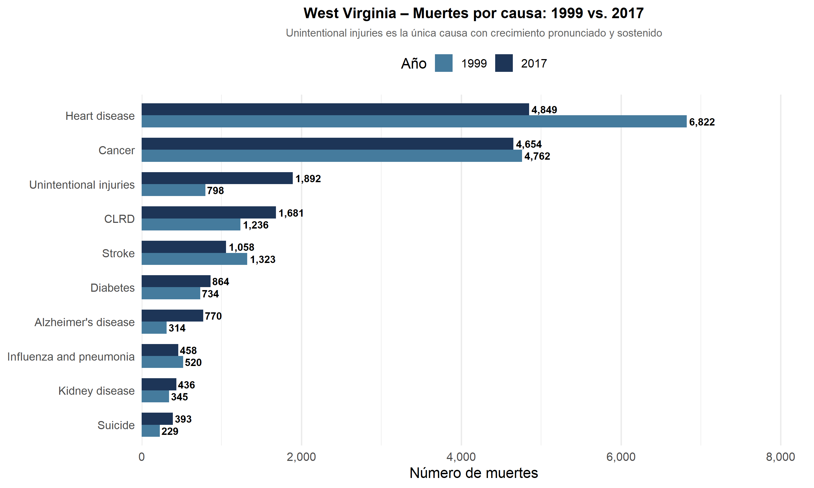
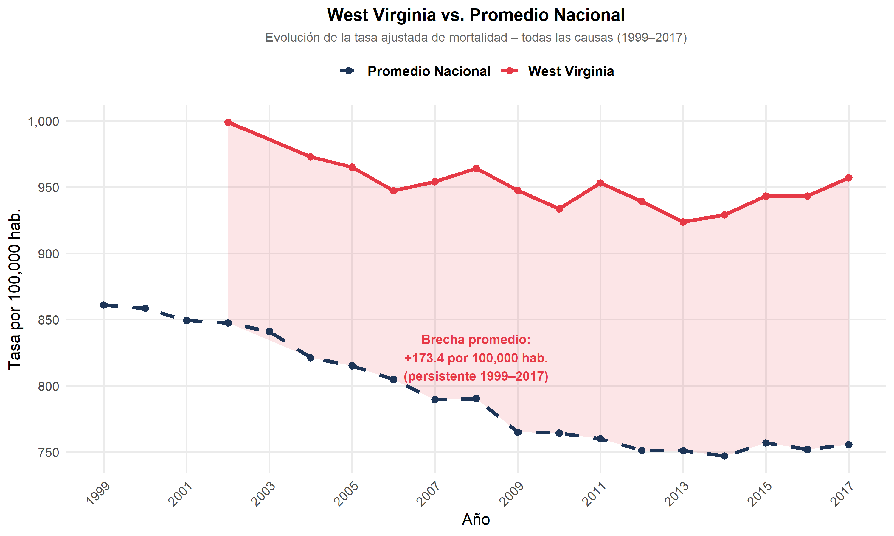

10 Caso de estudio: West Virginia
West Virginia el estado con la tasa de mortalidad ajustada por edad más alta del país en 2017 (957.5 por 100,000 habitantes), casi el doble que Hawái con 584.9, el estado con la tasa más baja. Esta posición, identificada en la sección 8.3.3, lo convierte en el caso de estudio más relevante para examinar si las disparidades geográficas documentadas en la literatura (James, Cossman, and Wolf 2018) son persistentes, o si responden a fluctuaciones puntuales. Primero se examina la evolución de todas las causas de muerte en el estado a lo largo del período; luego se profundiza en la comparación 1999 vs. 2017 por causa y finalmente se contrasta la serie temporal del estado con el promedio nacional, para evaluar si West Virginia converge o diverge con el resto del país.
10.1 Evolución de las causas de muerte en West Virginia (1999–2017)
El siguiente gráfico muestra la trayectoria de cada causa de muerte en West Virginia a lo largo del período, destacando la causa que presenta el comportamiento más atípico: las lesiones no intencionales (Unintentional Injuries).
library(dplyr)
library(ggplot2)
library(scales)
library(readr)
library(janitor)
library(stringr)
datos_limpios <- read_csv("NCHS_Leading_Causes.csv") %>%
clean_names() %>%
mutate(
year = as.numeric(year),
state = str_trim(state),
deaths = as.numeric(deaths),
age_adjusted_death_rate = as.numeric(age_adjusted_death_rate)
) %>%
filter(
state != "United States",
year >= 1999,
year <= 2017
)
# Datos estatales de West Virginia – todas las causas
wv_causas <- datos_limpios %>%
filter(
state == "West Virginia",
cause_name != "All causes",
!is.na(age_adjusted_death_rate)
) %>%
arrange(year) %>%
mutate(
destacar = ifelse(
cause_name == "Unintentional injuries",
"Unintentional injuries",
"Otras causas"
)
)
ggplot(wv_causas,
aes(x = year,
y = age_adjusted_death_rate,
group = cause_name,
color = destacar)) +
geom_line(data = subset(wv_causas, destacar == "Otras causas"),
linewidth = 0.9, alpha = 0.45) +
geom_line(data = subset(wv_causas, destacar == "Unintentional injuries"),
linewidth = 2.0) +
geom_point(data = subset(wv_causas, destacar == "Unintentional injuries"),
size = 2.5) +
geom_vline(xintercept = 2014, linetype = "dashed",
color = "#D62828", alpha = 0.5) +
annotate("text", x = 2014.2, y = 15,
label = "2014: punto de\naceleración",
hjust = 0, color = "#D62828",
fontface = "italic", size = 3.3) +
scale_color_manual(values = c(
"Unintentional injuries" = "#D62828",
"Otras causas" = "#9AA0A6"
)) +
scale_x_continuous(breaks = seq(1999, 2017, by = 2),
limits = c(1999, 2017)) +
scale_y_continuous(labels = comma) +
labs(
title = "Evolución de las causas de muerte en West Virginia (1999–2017)",
subtitle = "Las lesiones no intencionales (rojo) son la causa de mayor crecimiento desde 2014",
x = "Año", y = "Tasa ajustada por 100,000 hab.",
color = ""
) +
theme_minimal(base_size = 13) +
theme(
panel.background = element_rect(fill = "#F4F6F8", color = NA),
plot.background = element_rect(fill = "#F4F6F8", color = NA),
panel.grid.major = element_line(color = "white", linewidth = 0.8),
panel.grid.minor = element_blank(),
legend.position = "top",
plot.title = element_text(face = "bold", size = 14, hjust = 0.5),
plot.subtitle = element_text(color = "#D62828", face = "bold",
size = 10, hjust = 0.5),
axis.text.x = element_text(angle = 45, hjust = 1)
)
Mientras la mayoría de las causas en West Virginia muestran una tendencia descendente o estable, las lesiones no intencionales (Unintentional injuries) exhiben un comportamiento opuesto: tras mantenerse relativamente estables entre 1999 y 2013, experimentan una aceleración pronunciada a partir de 2014. Este punto de inflexión no es aleatorio: coincide con el agravamiento de la epidemia de sobredosis de opioides en el estado, que según el Departamento de Salud de West Virginia (WVDHHR) convirtió a las intoxicaciones por medicamentos recetados en la principal causa de muerte accidental entre los menores de 45 años (Daugherty et al. 2019).
10.2 9.1.1.¿Qué explica el crecimiento de las lesiones no intencionales en West Virginia?
No es casual que la diferencia de West Virginia contra la media nacional sea en la categoría de lesiones no intencionadas. Se identifican 5 categorías documentadas por el Programa de Prevención de Violencia y Lesiones de West Virginia (WVDHHR) como las principales subcausas detrás de la categoría Unintentional injuries en el estado.
La mas severa es la sobredosis con medicinas recetadas. A partir de los años noventa, médicos comenzaron a recetar en masa opiáceos con la idea de que el dolor crónico estaba siendo subtratado. Una consecuencia fue una epidemia: en 2012 se entregaron 259 millones de recetas de analgésico en EE.UU., suficiente para que un adulto norteamericano tuviera su propio frasco. WV absorbió ese impacto de lleno. Las hospitalizaciones con un diagnóstico relativo a las drogas aumentaron de 363.7 a 506.5 por cada 10,000 egresos entre el 2007 al 2011, los arrestos relacionados con las violaciones de las drogas aumentaron más del 40% de 2004 a 2011 y más del 95% de los informes de abusos que fueron recibidos en la línea de ayuda estatal en 2012 se debieron a las drogas opiáceas: la oxicodona lidero la lista con el 31.8%. La sobredosis ya es la primera causa de muerte en el estado para menores de 45.
El segundo factor es el traumatismo craneoencefálico. Durante 2015 fallecieron 411 residentes debido a esto 20% de todas las defunciones originadas por lesión, y otras 763 personas fueron internadas 25%. El punto focalizante es hacia dónde va el problema el 40.9% de las defunciones de TBI anuales corresponden a hombres/mujeres mayores de 65 años y casi 4 de cada 5 del grupo mayor son causadas por una caída. El conjunto que más sufrió muertes y hospitalizaciones estaba entre los 75 y 84 años. Éste no es el hecho menor en un estado con poblaciones envejecidas y servicios de sanidad distribuidos fuera del área rural.
Los accidentes de circulación van en el tercer puesto. 292 personas adicionales fueron hospitalizadas. En 2015, 341 personas murieron en choques vehiculares, casi el 17% de todas las muertes por lesión. Los accidentes del tránsito son la primera causa de muerte para gente entre 5 y 24 años, y la segunda para mayores de 25. Como estado con carreteras de montaña, grandes distancias y deficiente infraestructura para el transporte público, esa cifra lleva consigo su contexto.
El abuso infantil y negligencia también pesan. En 2015 cinco niños de 0 a 5 años murieron debido al maltrato infantil, un 26% del número total de muerte por lesiones para esa población. Otros 19 niños con la misma franja etaria fue hospitalizado por la misma causa en 2013, 10% de todas las hospitalizaciones por lesiones. En el caso del maltrato infantil, se entiende por maltrato tanto los actos abusivos directos como la falta o desatención: con otras palabras, la cobertura inadecuada a las necesidades básicas físicas, emocionales o educativas del infante. En ambos, el daño puede ser tan severo. Y finalmente, la violencia de pareja intima completa el mapa. Sin figurar con un número directo de muertes mortales en cualquier registro disponible, WVDHHR lo registra sin embargo como un factor de riesgo documentado en el perfil estatal de lesiones. Es un espectro que va del abuso físico/sexual a las amenazas y el control emocional; su presencia en entornos de limitado acceso al soporte agrava la afectación.
Considerado el conjunto de éstos cinco factores no son problemas aislados. Son diferentes expresiones de una misma vulnerabilidad estructural: Estado con depresión económica, población envejecida, áreas rurales con acceso limitado a sanidad y una historia de dependencias hacia industrias en desaparición. Las políticas generales no alcanzan para esto. Lo que los datos sugieren es que se requieren intervenciones en función de WV, y no recetas nacionales aplicadas de forma uniforme. Intervenciones territoriales focalizadas que aborden los determinantes sociales, factores conductuales, económicos y de acceso a servicios de salud específicos
10.3 Comparación de muertes por causa: West Virginia 1999 vs. 2017
Para cuantificar el cambio absoluto en cada causa entre el inicio y el final del período, se compara directamente el número de muertes en West Virginia en 1999 y 2017.
library(dplyr)
library(ggplot2)
library(scales)
library(readr)
library(janitor)
library(stringr)
datos_limpios <- read_csv(
"NCHS_Leading_Causes.csv",
col_types = cols(.default = col_character())
) %>%
clean_names() %>%
mutate(
year = as.numeric(year),
state = str_trim(state),
deaths = as.numeric(gsub("\\.", "", deaths)),
age_adjusted_death_rate = as.numeric(gsub(",", ".", age_adjusted_death_rate))
) %>%
filter(
state != "United States",
year >= 1999,
year <= 2017
)
wv_comp <- datos_limpios %>%
filter(
state == "West Virginia",
year %in% c(1999, 2017),
cause_name != "All causes",
!is.na(deaths)
) %>%
select(year, cause_name, deaths) %>%
mutate(year = factor(year))
orden_causas_wv <- wv_comp %>%
filter(year == 2017) %>%
arrange(deaths) %>%
pull(cause_name)
wv_comp <- wv_comp %>%
mutate(cause_name = factor(cause_name, levels = orden_causas_wv))
ggplot(wv_comp,
aes(x = cause_name, y = deaths, fill = year)) +
geom_col(position = "dodge", width = 0.7) +
geom_text(aes(label = comma(deaths)),
position = position_dodge(0.7),
hjust = -0.1, size = 3.2, fontface = "bold") +
coord_flip() +
scale_fill_manual(values = c("1999" = "#457B9D", "2017" = "#1D3557")) +
scale_y_continuous(labels = comma,
expand = expansion(mult = c(0, 0.22))) +
labs(
title = "West Virginia – Muertes por causa: 1999 vs. 2017",
subtitle = "Unintentional injuries es la única causa con crecimiento pronunciado y sostenido",
x = NULL, y = "Número de muertes",
fill = "Año"
) +
theme_minimal(base_size = 13) +
theme(
plot.title = element_text(face = "bold", hjust = 0.5, size = 13),
plot.subtitle = element_text(hjust = 0.5, size = 9.5, color = "gray40"),
legend.position = "top",
panel.grid.major.y = element_blank(),
axis.text.y = element_text(size = 10)
)
10.4 West Virginia vs. Promedio Nacional (1999–2017)
La pregunta principal de esta subsección es: ¿West Virginia converge con el resto del país a lo largo del tiempo o la brecha se mantiene estructuralmente estable? La comparación se establece entre la tasa ajustada de West Virginia y el promedio de todos los estados, que es la referencia metodológicamente correcta para evaluar disparidades territoriales (James, Cossman, and Wolf 2018).
library(dplyr)
library(ggplot2)
library(scales)
# Serie West Virginia – All causes
wv_total <- datos_limpios %>%
filter(
state == "West Virginia",
cause_name == "All causes",
!is.na(age_adjusted_death_rate)
) %>%
arrange(year) %>%
select(year, age_adjusted_death_rate) %>%
mutate(serie = "West Virginia")
# Promedio de los 50 estados + DC (excluye el agregado nacional)
promedio_nac <- datos_limpios %>%
filter(
state != "United States",
cause_name == "All causes",
!is.na(age_adjusted_death_rate)
) %>%
group_by(year) %>%
summarise(
age_adjusted_death_rate = mean(age_adjusted_death_rate, na.rm = TRUE),
.groups = "drop"
) %>%
mutate(serie = "Promedio Nacional")
# Calcular brecha por año
brecha_df <- wv_total %>%
left_join(
promedio_nac %>% select(year, tasa_nac = age_adjusted_death_rate),
by = "year"
) %>%
mutate(brecha = age_adjusted_death_rate - tasa_nac)
brecha_promedio <- round(mean(brecha_df$brecha, na.rm = TRUE), 1)
brecha_inicio <- round(brecha_df$brecha[brecha_df$year == 1999], 1)
brecha_final <- round(brecha_df$brecha[brecha_df$year == 2017], 1)
# Unir series
ambas_series <- bind_rows(
wv_total %>% select(year, age_adjusted_death_rate, serie),
promedio_nac %>% select(year, age_adjusted_death_rate, serie)
)
ggplot() +
# Área de brecha sombreada
geom_ribbon(
data = brecha_df,
aes(x = year, ymin = tasa_nac, ymax = age_adjusted_death_rate),
fill = "#E63946", alpha = 0.13
) +
# Líneas de las dos series
geom_line(
data = ambas_series,
aes(x = year, y = age_adjusted_death_rate,
color = serie, linetype = serie),
linewidth = 1.4
) +
geom_point(
data = ambas_series,
aes(x = year, y = age_adjusted_death_rate, color = serie),
size = 2.2
) +
# Anotación de la brecha persistente
annotate("text",
x = 2008,
y = mean(wv_total$age_adjusted_death_rate) - 130,
label = paste0("Brecha promedio:\n+", brecha_promedio,
" por 100,000 hab.\n(persistente 1999–2017)"),
color = "#E63946", fontface = "bold",
size = 3.6, hjust = 0.5) +
scale_color_manual(
values = c("West Virginia" = "#E63946",
"Promedio Nacional" = "#1D3557")
) +
scale_linetype_manual(
values = c("West Virginia" = "solid",
"Promedio Nacional" = "dashed")
) +
scale_x_continuous(breaks = seq(1999, 2017, by = 2)) +
scale_y_continuous(labels = comma) +
labs(
title = "West Virginia vs. Promedio Nacional",
subtitle = "Evolución de la tasa ajustada de mortalidad – todas las causas (1999–2017)",
x = "Año",
y = "Tasa por 100,000 hab.",
color = NULL, linetype = NULL
) +
theme_minimal(base_size = 13) +
theme(
legend.position = "top",
legend.text = element_text(size = 11, face = "bold"),
plot.title = element_text(face = "bold", size = 14, hjust = 0.5),
plot.subtitle = element_text(size = 10, hjust = 0.5, color = "gray40"),
axis.text.x = element_text(angle = 45, hjust = 1),
panel.grid.minor = element_blank()
)
library(kableExtra)
brecha_df %>%
filter(year %in% c(1999, 2003, 2007, 2011, 2014, 2017)) %>%
mutate(
age_adjusted_death_rate = round(age_adjusted_death_rate, 1),
tasa_nac = round(tasa_nac, 1),
brecha = round(brecha, 1)
) %>%
select(
`Año` = year,
`WV (tasa)` = age_adjusted_death_rate,
`Nacional (promedio)` = tasa_nac,
`Brecha (WV − Nac.)` = brecha
) %>%
kable(
caption = "Brecha entre West Virginia y el promedio nacional – años seleccionados",
align = c("c", "c", "c", "c")
) %>%
kable_styling(
bootstrap_options = c("striped", "hover"),
full_width = FALSE, font_size = 12, position = "center"
) %>%
row_spec(0, background = "#1D3557", color = "white", bold = TRUE) %>%
column_spec(4, color = "#E63946", bold = TRUE)| Año | WV (tasa) | Nacional (promedio) | Brecha (WV − Nac.) |
|---|---|---|---|
| 2007 | 954.2 | 789.6 | 164.6 |
| 2011 | 953.2 | 760.2 | 193.0 |
| 2014 | 929.1 | 747.1 | 182.0 |
| 2017 | 957.1 | 755.7 | 201.4 |
Interpretación: El hallazgo central es que la brecha absoluta entre West Virginia y el promedio nacional no se cierra, se inicia en puntos en 1999 y permanece en torno a 201.4 puntos en 2017, con una brecha promedio de 173.4 puntos durante todo el período.West Virginia mejora, pero no converge. El estado avanza en paralelo al país sin acortar la distancia que lo separa de la media nacional. Este resultado confirma la hipótesis de James, Cossman, and Wolf (2018) sobre la persistencia estructural de las disparidades en el sureste y los apalaches: el gradiente de mortalidad no responde suficientemente a las mejoras generales del sistema de salud porque sus determinantes son estructurales a mayor desempleo, menor nivel educativo, alta prevalencia de enfermedades crónicas y el peso creciente de la epidemia de opioides documentada en la sección 9.1.